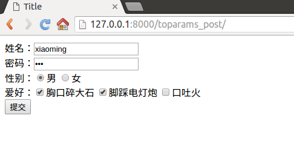
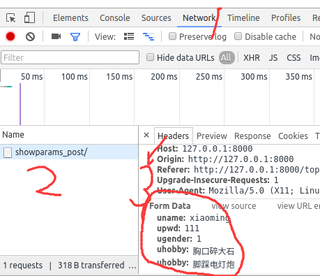
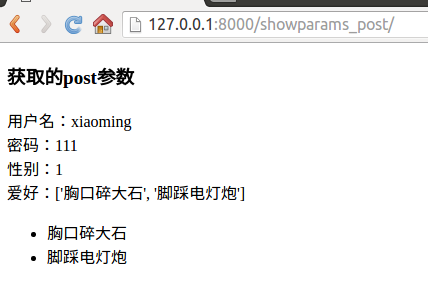

POST属性
使用form表单请求时，method方式为post则会发起post方式的请求，需要使用HttpRequest对象的POST属性接收参数，POST属性是一个QueryDict类型的对象。
问：表单form如何提交参数呢？
答：表单控件name属性的值作为键，value属性的值为值，构成键值对提交。
- 如果表单控件没有name属性则不提交。
- 对于checkbox控件，name属性的值相同为一组，被选中的项会被提交，出现一键多值的情况。
- 键是表单控件name属性的值，是由开发人员编写的。
- 值是用户填写或选择的。
示例
- 打开booktest/views.py文件，创建视图toparams_post、showparams_post
# 用来创建表单
def toparams_post(request):
return render(request,'booktest/toparams_post.html')
# 接收表单请求的数据
def showparams_post(request):
return render(request,'booktest/showparams_post.html')
- 打开booktest/urls.py文件，配置url
url(r'^toparams_post/$',views.toparams_post),
url(r'^showparams_post/$',views.showparams_post),
- 在templates/booktest目录下创建toparams_post.html，代码如下
<html>
<head>
<title>POST属性</title>
</head>
<body>
<form method="post" action="/showparams_post/">
姓名：<input type="text" name="uname"/><br>
密码：<input type="password" name="upwd"/><br>
性别：<input type="radio" name="ugender" value="1"/>男
<input type="radio" name="ugender" value="0"/>女<br>
爱好：<input type="checkbox" name="uhobby" value="胸口碎大石"/>胸口碎大石
<input type="checkbox" name="uhobby" value="脚踩电灯炮"/>脚踩电灯炮
<input type="checkbox" name="uhobby" value="口吐火"/>口吐火<br>
<input type="submit" value="提交"/>
</form>
</body>
</html>
- 在浏览器中请求 填写表单

- 右键点击'检查'，选择“Network”标签，点击“提交”按钮，在“开发者工具”中点击“showparams_post”，找到提交数据如下图

- 完善视图showparams_post的代码如下
# 接收表单请求的数据
def showparams_post(request):
dictpost = request.POST
uname = dictpost.get('uname')
upwd = dictpost.get('upwd')
ugender = dictpost.get('ugender')
uhobby = dictpost.getlist('uhobby')
context = {'uname': uname, 'upwd': upwd, 'ugender': ugender, 'uhobby': uhobby}
return render(request, 'booktest/showparams_post.html',context)
- 在templates/booktest目录下创建showparams_post.html，代码如下
<!DOCTYPE html>
<html lang="en">
<head>
<meta charset="UTF-8">
<title>Title</title>
</head>
<body>
<h3>获取的post参数</h3>
用户名：<br>
密码：<br>
性别：<br>
爱好：<br>
<ul>
</ul>
</body>
</html>
- 最终请求结果如下
